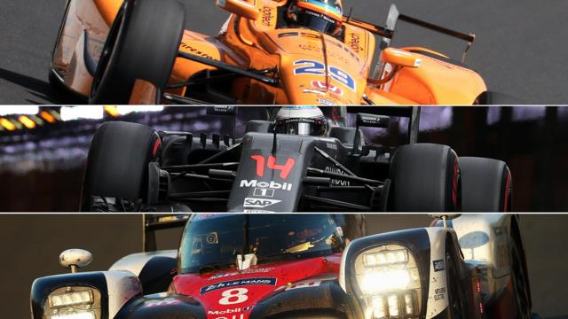

La Triple Corona
La Triple Corona en el mundo del automovilismo es un logro no reconocido ofialmente y que hasta la fecha solo ha logrado un piloto hasta el fecha y consta de las tres carreras más famosas del mundo: el Gran Premio de Mónaco de F1, las 24 horas de Le Mans y las 500 Millas de Indianápolis.
Hasta la fecha solo un piloto ha completado dicho logro, el británico Graham Hill, ganador del GP de Mónaco en 5 ocasiones(1963, 1964, 1965, 1968 y 1969), las 500 Millas de Indianápolis en 1966 y las 24 horas de Le Mans en 1972.
En la actualidad, los únicos pilotos en activo que han ganado dos de las tres carreras son Juan Pablo Montoya(le faltan las 24 horas de Le Mans) y Fernando Alonso(le faltan las 500 Millas de Indianápolis).
